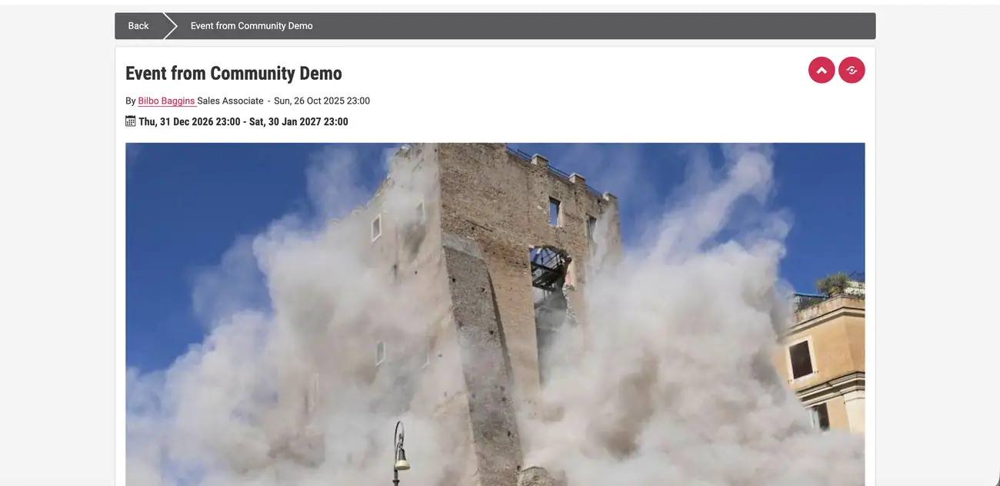
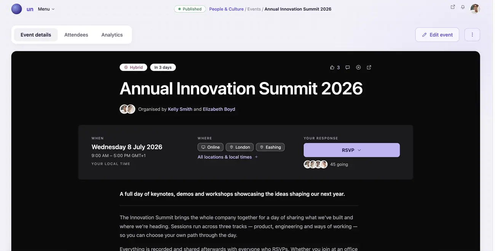
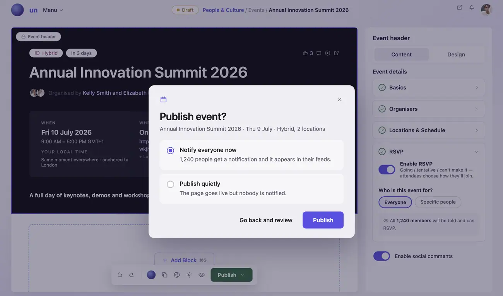
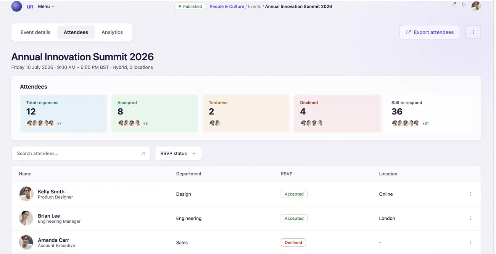
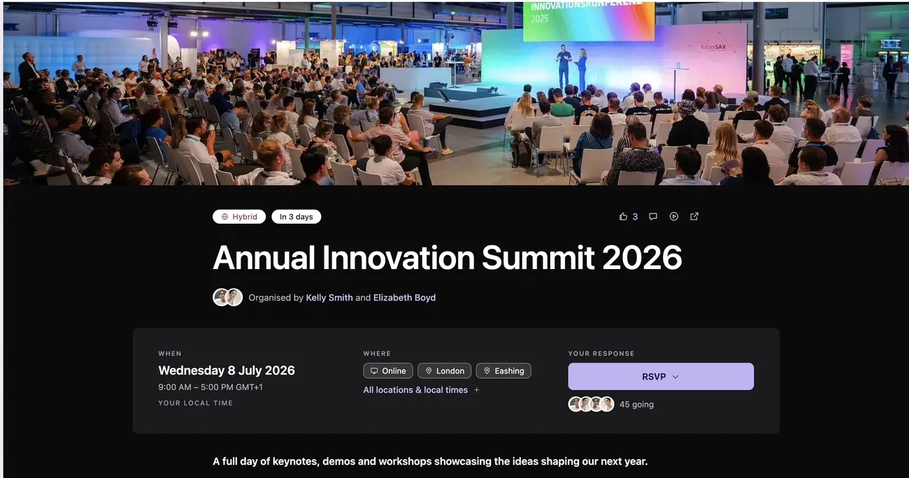
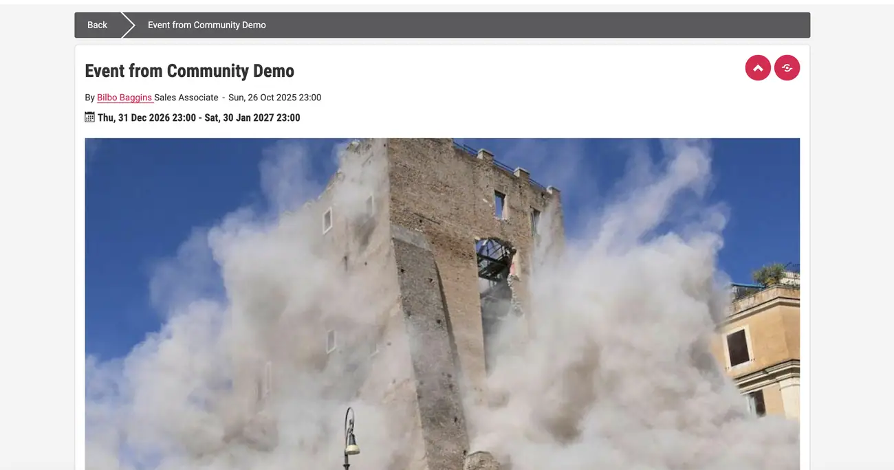

From content workaround to first-class capability
Rebuilding how the platform represents time-based moments, so employees recognise an Event on sight and organisers never touch a workaround again.
A model designed for none of it
Employees couldn’t reliably tell what an Event was or what it expected of them. Organisers couldn’t run one end to end without leaving the platform.
Underneath both was a structural problem: Events were being forced through a generic content model never designed to hold them. That showed up as heavy reliance on external calendar tools, repeated requests for recurring and cultural moments the platform had no category for, and mounting engineering friction every time the model was stretched.
Discovery found one model standing in for five use cases — one-off meetings, leadership broadcasts, cultural moments, training sessions and compliance deadlines. Workarounds weren’t the exception, they were the norm.

Three groups, three different failures
Everyone wanted the same thing — one clear moment with a time attached. What differed was where each group went when the platform could not give them one, and none of those places reported back.
The diagram that got it approved, not the wireframe
Rather than start from screens, I mapped the system first: what makes an Event structurally different from content, how a single Event relates to its recurring occurrences, and how timing, presentation blocks and distribution logic stay cleanly separated.
A title is the only thing required to create one; timing is required before publish. Lifecycle status — Upcoming, Live, Finished — derives automatically from that timing rather than being set by hand.
One Event with a repeat pattern, not duplicated records
Duplicating a record per occurrence was faster to ship and breaks the moment recurrence needs cross-occurrence consistency or editing. So a recurring Event is a single object with a shared repeat pattern.
In practice: an employee searches “Townhall”, finds the parent Event, sees the overarching details plus a component promoting the next occurrence, and can drill into a specific one for its own location, topic or speaker.

Not every event needs an article
Requiring a content page for every Event would have forced organisers straight back into a workaround for simple moments that don’t need one. So an Event publishes and appears in roll-ups with zero content authoring — or, optionally, gets a supporting article with the Event details embedded inside it.
Events were built on the platform’s existing block system rather than a parallel presentation layer. The RSVP and Join/Access blocks introduced here were contributed back to the shared library rather than kept Event-specific — which is why the Event object later powered the Events tab and “Upcoming events” widget inside Communities with no additional engineering.

Four criteria, two of them deliberately awkward to hit
100% functional parity — no net loss of any existing Event use case. 80%+ unaided clarity — usability participants identify an Event without explanation. 3 validated scenarios — standard events published with zero external tools. 0 architecture blockers — confirmed by Engineering against named future concepts.
These were agreed with Product and Engineering before design or build started, not backfilled afterwards. Unaided clarity is measured through usability testing rather than survey sentiment, and architectural readiness is signed off against specific roadmap concepts rather than a general sense that the model feels extensible.
Foundation over full lifecycle
Cycle 1 is still in build, so there is no post-launch adoption data — and I’d rather say that than dress a target up as a result.
The clearest signal so far is qualitative: Engineering’s architecture review confirmed no schema constraints blocking recurring events, rituals or experience layering. That’s the strongest early indicator the foundation holds under the next two phases of roadmap.
Three of the four major decisions here were deliberate reductions in scope — outbound-only calendar sync, RSVP capturing declared intent with attendance out of scope, no full lifecycle tracking. The model had to be correct first and complete later, because every capability deferred was one that would have been harder to unpick if the structure turned out wrong.

The same moment, either side of the model
Before, an Event was a content page wearing a date. No status, no RSVP, no sense of what it wanted from you — and organisers reaching for an external calendar to fill the gaps. After, it is an object the platform understands: lifecycle, locations, responses and presentation, all derived from the model rather than assembled by hand.

